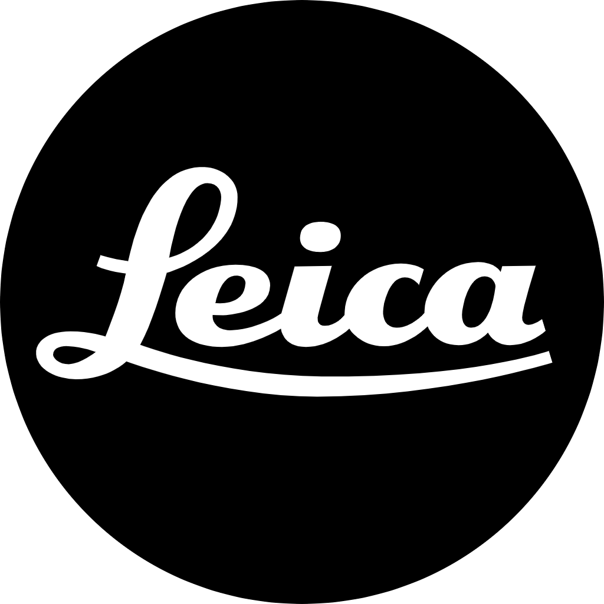
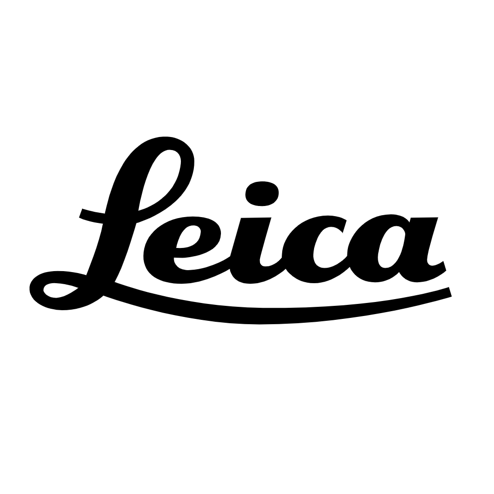

Rexif Studio能為你做什麼
相機色彩設定匹配
透過修改RAW檔案的EXIF相機型號資訊，讓Adobe Camera Raw能夠正確識別並套用對應的相機設定檔，從而獲得目標相機的機內預設效果。原始拍攝參數完全保留。
批次處理
支援批次處理多個RAW檔案，一次為所有檔案套用相同的相機色彩設定。顯著提高工作效率，特別適合需要統一色彩風格的攝影專案。
Adobe Camera Raw / Lightroom相容
專為Adobe Camera Raw與Lightroom設計，確保修改後的檔案能正確識別並套用目標相機的色彩設定檔。獲得目標相機的機內預設效果，提升後製效率。
支援主流RAW格式
ARW、CR2、CR3、NEF、RAF、ORF、RW2、DNG、PEF、SRW等


常見問題
什麼是相機色彩設定匹配？
相機色彩設定匹配是Rexif Studio的核心功能，透過修改RAW檔案的EXIF相機型號資訊，讓Adobe Camera Raw能夠正確識別並套用對應的相機設定檔，進而獲得目標相機的機內預設效果。
如何使用Rexif Studio編輯EXIF資訊？
選擇需要處理的RAW檔案，接著選定目標相機型號。Rexif Studio會修改RAW檔中的EXIF相機型號資訊。處理後的檔案在Adobe Camera Raw與Lightroom中會自動套用目標相機的色彩設定檔。
支援哪些RAW格式？
Rexif Studio支援主流RAW格式，包括CR2（佳能）、ARW（索尼）、NEF（尼康）、RAF（富士）、ORF（奧林巴斯）、RW2（松下）、PEF（賓得）、SRW（三星）等。軟體可直接編輯這些格式的EXIF資訊。
Rexif Studio是否相容Adobe Camera Raw / Lightroom？
是的，Rexif Studio專為Adobe Camera Raw與Lightroom的相容性而設計。透過修改EXIF相機型號資訊，確保Adobe Camera Raw與Lightroom能夠正確識別並套用對應的相機設定檔，從而獲得目標相機的機內預設效果。
Rexif Studio支援哪些平台？
Rexif Studio使用Flutter開發，支援macOS與Windows平台。軟體整合Adobe DNG Converter與ExifTool，需在您的系統上另外安裝以獲得完整功能。
為什麼需要相機色彩設定匹配？
當攝影師想要獲得特定相機的色彩風格時，相機色彩設定匹配能讓Adobe Camera Raw正確識別並套用目標相機的色彩設定檔。如此即可獲得目標相機的機內預設效果，提升後製效率與一致性。